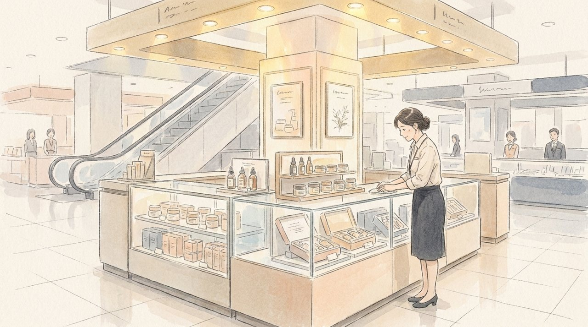
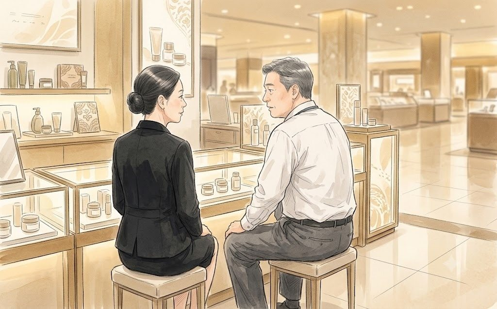
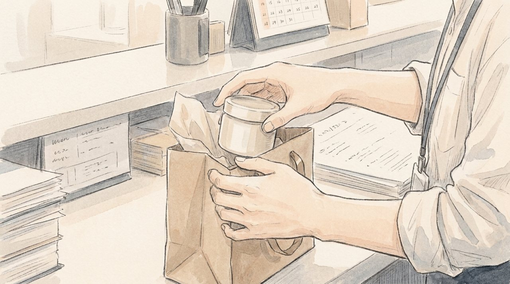

쿠폰을 내리는 데는 40초가 걸렸다.
이우진은 관리자 화면에서 '사용 중지'를 누르고, 브랜드몰 연휘 브랜드관을 새로고침했다. 10% 할인 표시가 사라졌다. 숨을 한 번 내쉬었다. 그리고 쿠폰 사용 내역을 열었다.
어제 오후 4시 12분부터 오늘 오후 2시 18분까지. 22시간 동안 연휘 제품에 그 쿠폰이 쓰인 건수가 화면에 떠 있었다.
이우진은 그 숫자를 보고 눈을 의심했다. 지난 한 달 동안 브랜드몰에서 연휘가 팔린 건수보다 많았다.
"우진아."
한지석이 등 뒤에 서 있었다. 이우진은 고개를 돌리지 못했다.
"제가 했어요. 슬로워시 한정으로 설정했다고 생각했는데, 범위가 기본값으로..."
"알아. 지금 상무님 방으로 가자."
상무실 문은 열려 있었다. 안에서 엄기태 상무의 목소리가 복도까지 흘러나왔다. 전화가 아니었다. 직접 올라온 것이었다.
"권 상무, 연휘가 어떤 브랜드인지 알아요? 백화점 1층에서 30년을 지킨 브랜드예요. 우리 고객은 연휘가 세일하는 걸 본 적이 없어요. 한 번도요."
"상무님, 쿠폰은 지금 내렸습니다."
"내렸다고 끝나요? 오늘 아침에 백화점 매니저한테서 전화가 왔어요. 고객이 매장에서 휴대폰 화면을 보여 주면서, 온라인에서는 10% 싼데 여기서는 왜 정가냐고 했대요. 30년 동안 그런 질문은 없었어요."
권재혁은 책상 앞에 서 있었다. 엄기태는 앉지 않았다. 둘 다 서 있었다.
이우진이 문 앞에서 입을 열려고 했다. 제가 했습니다. 그 한마디면 됐다. 그런데 그보다 먼저 다른 목소리가 들렸다.
"제가 지시했습니다."
백승원이었다. 그는 이우진과 한지석 사이를 지나 상무실 안으로 들어갔다.
"첫 구매 쿠폰을 시험해 보라고 제가 지시했습니다. 범위 확인을 제대로 안 한 건 제 불찰입니다. 죄송합니다, 상무님."
엄기태가 백승원을 돌아봤다. 이우진은 숨을 멈췄다. 백승원은 그런 지시를 한 적이 없었다. 어제 오후, 그는 사업부 회의에 들어가 있었다.
"백 부장이요?"
"네."
"백 부장은 백화점 바이어 출신 아니에요? 백화점에서 할인이 어떤 의미인지 제일 잘 알 사람이."
"그래서 더 죄송합니다."
백승원은 고개를 깊이 숙였다. 엄기태는 한참 그를 내려다보다가, 시선을 다시 권재혁에게 돌렸다.
"권 상무. 다시 말할게요. 연휘는 할인하는 브랜드가 아닙니다."
"압니다."
"그런데 토요일에 사장님 앞에서 '세 번 눌러서 사게 하겠다'고 했잖아요. 쉬운 게 싼 거라고 내가 그날 말했죠. 결국 이렇게 될 거라고."
권재혁은 잠시 말이 없었다. 그리고 책상 위의 출력물 한 장을 집어 엄기태에게 내밀었다.
"상무님, 이거 한번 보시겠어요?"
이우진이 방금 뽑은 쿠폰 사용 내역이었다. 언제 가져갔는지 알 수 없었다.
엄기태는 종이를 받지 않았다.
"그게 뭡니까."
"어제 22시간 동안 브랜드몰에서 연휘를 산 사람들입니다. 지난 한 달보다 많습니다. 그리고 그중 열에 일곱은 연휘를 처음 산 사람들이에요. 백화점에 오지 않던 고객들입니다."
"할인했으니까 산 거죠."
"10%였습니다. 10% 때문에 처음 사는 사람이라면, 연휘를 사고 싶었는데 살 길이 없었던 사람이라는 뜻일 수도 있습니다."
"그걸 어떻게 압니까?"
"모릅니다. 그래서 알아보고 싶습니다."
엄기태의 얼굴이 굳었다. 그는 결국 종이를 받지 않은 채 돌아섰다. 문 앞에서 이우진과 눈이 마주쳤다. 그는 이우진을 아주 잠깐 쳐다보았다. 다 알고 있다는 눈이었다. 쿠폰을 누가 등록했는지, 백승원이 무엇을 덮었는지.
"권 상무. 다음부터 연휘 관련 건은 우리 사업부 서면 동의 없이는 아무것도 하지 마세요. 팝업도요."
그는 나갔다. 복도에 구두 소리가 오래 울렸다.
상무실에 넷이 남았다. 권재혁이 먼저 의자에 앉았다.
"한 차장, 이 과장. 팝업은 연휘 빼고 나머지 사업부부터 받아요. 연휘는 내가 따로 갈게요. 잠깐 나가 있어요."
한지석이 이우진의 팔을 끌고 나왔다. 문이 닫히기 직전, 이우진은 권재혁이 넥타이를 푸는 걸 봤다.
문이 닫히자 권재혁의 목소리가 낮아졌다. 문틈으로 새어 나온 그 목소리를, 이우진은 처음 들었다.
"승원아. 너 어제 사업부 회의 들어가 있었잖아."
"형님, 그냥 넘어가요."
"매번 이럴 거야? 남의 실수 다 네 이름으로 덮고?"
"우진이 이름은 아직 저런 방에 오르면 안 됩니다. 형님도 아시잖아요."
긴 침묵이 흘렀다. 이우진은 문 앞에 서서 숨을 죽였다. 한지석이 그의 어깨를 잡아끌었다. 들으면 안 되는 대화라는 뜻이었다.
"...이번이 마지막이다."
"네, 형님."
문이 열리고 백승원이 나왔다. 그는 아무 일도 없었다는 얼굴이었다.
복도로 나오자마자 이우진이 백승원을 붙잡았다.
"부장님, 왜 그러셨어요. 제가 한 건데."
백승원은 걸음을 멈추지 않았다. 엘리베이터 앞에서야 그는 이우진을 돌아봤다.
"우진아. 너 이름은 아직 저런 방에 오르면 안 돼."
"그래도요."
"내 이름은 이미 많이 올라 있어서 괜찮아. 하나 더 올라간다고 티도 안 나."
그는 웃었다. 그 웃음이 이우진에게는 이상하게 아팠다.
"대신 하나만 약속해."
"뭐든지요."
"다음에 쿠폰 등록할 때, 범위 칸 세 번 확인해. 세 번."
엘리베이터 문이 열렸다. 백승원은 혼자 탔다. 문이 닫히기 전, 그는 휴대폰을 꺼내 누군가에게 전화를 걸고 있었다.
"여보, 오늘도 좀 늦어. 미안해."
그날 저녁 6시, 백승원은 회사가 아니라 백화점에 있었다.
신우백화점 본점 1층. 연휘 매장은 에스컬레이터 바로 앞, 가장 좋은 자리에 있었다. 금색 조명 아래 유리 진열장이 반짝였다. 백승원은 그 자리를 잘 알았다. 20년 전, 그가 백화점 바이어였을 때 연휘를 이 자리에 앉힌 협상 테이블에 그도 있었다.
매장 매니저 편미숙은 쉰 살이 넘은 여성이었다. 연휘에서만 25년. 그녀는 백승원을 알아봤다.

"백 바이어님? 아니, 이제 부장님이시죠."
"오랜만입니다, 매니저님. 오늘 아침 일로 왔습니다. 죄송합니다."
그는 고개를 숙였다. 매니저는 당황한 얼굴로 손을 내저었다.
"부장님이 왜 사과를 하세요. 쿠폰은 회사에서 한 거잖아요."
"그 회사에 제가 있으니까요."
매니저는 잠시 백승원을 보다가, 진열장 뒤에서 의자 두 개를 꺼냈다. 둘은 매장 구석에 나란히 앉았다.

"부장님, 솔직히 말씀드려도 돼요?"
"네."
"오늘 아침 그 손님, 화난 게 아니었어요. 서른 살 조금 넘어 보였는데, 휴대폰 화면을 보여 주면서 그러더라고요. '엄마 생일 선물 사려고 하는데, 온라인이 더 싸면 거기서 살게요.' 그리고 그냥 나갔어요. 화도 안 내고."
백승원은 아무 말도 하지 않았다.
"요즘 젊은 손님들은 매장에 와서 제품을 보고, 휴대폰으로 가격부터 봐요. 우리는 25년 동안 그런 손님을 받아 본 적이 없어요. 그래서 다들 화가 나는 거예요. 손님한테가 아니라, 우리가 모르는 세상한테."
백승원은 그 말을 오래 곱씹었다. 매장을 나서기 전, 그는 연휘 크림 하나를 정가에 샀다. 아내 정미란에게 줄 선물이었다. 할인은 받지 않았다.

저녁 7시. 이우진은 자리에 앉아 쿠폰 사용 내역을 다시 열었다. 22시간. 처음 산 고객 열에 일곱. 그는 그 숫자를 따로 저장해 두었다. 파일 이름은 '연휘_쿠폰_사고_분석'이라고 쓰려다가, '연휘_신규고객_22시간'으로 바꿨다. 같은 숫자였다. 이름만 달랐다.
옆자리의 최윤아가 퇴근 준비를 하다 그의 화면을 흘끗 봤다. 데이터·CRM 담당. 회사에서 숫자를 가장 정확하게 읽는 사람이었다.
"이 과장, 그거 나 좀 줄래?"
"이거요? 사고 난 건데요."
"사고 난 숫자가 제일 정직해."
최윤아는 파일을 받아 갔다. 그리고 그날 밤 11시, 팀 메신저에 짧은 메시지를 남겼다.
다음 날 아침, 이우진은 그 페이지를 열어 보고 한동안 아무 말도 하지 못했다.
(EP7 끝)